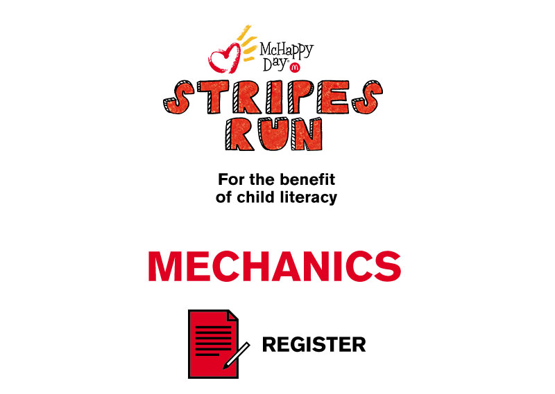
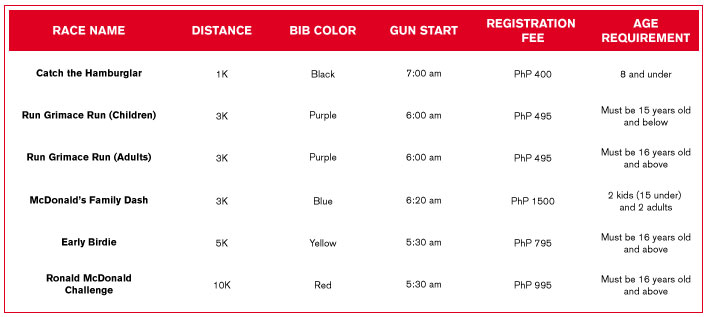
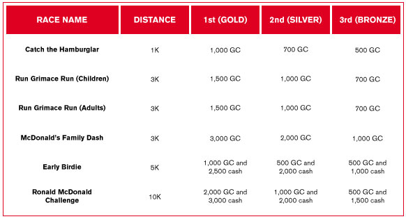

Register yourself and your family
for the McHappy Day Stripes Run
at these participating
McDonald's Registration Centers
in Metro Manila or Davao:
MANILA
McDonald’s Greenbelt, Makati
McDonald’s People Support, Makati
McDonald’s Makati Ave, Makati
McDonald’s Valero , Makati
McDonald’s 32nd Street , Fort Bonifacio
McDonald’s BGC Forum, Fort Bonifacio
McDonald’s Park Triangle Mall , Fort Bonfacio
McDonald’s Bench, Fort Bonifacio
McDonald’s Forbes Town Center , Fort Bonifacio
McDonald’s Eastwood, Quezon City
McDonald’s Quezon Ave. , Quezon City
McDonald’s Katipunan, Quezon City
McDonald’s ETON Centris, Quezon City
McDonald’s Greenhills, San Juan
McDonald’s Strata 100 , Ortigas
McDonald’s Tycoon, Ortigas
McDonald’s Alabang, Muntinlupas
McDonald’s Pontevia , Las Pinas
McDonald’s Sucat Caritas , Las Pinas
McDonald’s Blue Bay , Manila
McDonald’s Jose Abad, Manila
McDonald’s Pioneer, Mandaluyong
McDonald’s Marcos Highway, Marikina
RUNNR BGC, Fort Bonifacio
DAVAO
McDonald’s SM City Davao
McDonald’s Damosa
McDonald’s Matina Crossing
McDonald’s Abreeza
McDonald’s NCCC Mall
McDonald’s Bajada
McDonld’s Davao Pampanga
McDonald’s Sta Ana
McDonald’s Illustre
McDonald’s Bolton
McDonald’s MTS
McDonald’s Gaisano Mall
REGISTRATION PERIODS
On-site Registration
Manila: October 15 to November 30, 2015
Davao: October 15 to November 23, 2015
You can claim your race kit immediately
after submitting the accomplished forms
and paying the registration fees.
THE RACE KIT
1 Race Bib
(4 bibs per race kit for 3K family category)
and McHappy Day Reminders
with route map/ parking map / activity area.
FAILURE TO WEAR THE RACE BIB
WILL MAKE YOU INELIGIBLE
TO RUN THE RACE.
McHappy Day Shirt
1 pair McDonald’s Striped Socks
McDonald’s Breakfast Meal:
Present your food stub and claim your McDonald’s
Breakfast Meal at the venue
on the race day itself (5 AM to 9AM)
and not in any McDonald’s store.
PhP 100 worth of McMoney
McMoney is not equivalent to GC and will only be
accepted at the McHappy Day fair for all
non-food booths only.
Baggage stub
Finisher Token stub
Show your stripes
and see you on race day!
December 5, 2015 (Saturday)
30th Street Corner 9th Avenue
Bonifacio Global City
November 28, 2015 (Saturday)
People’s Park
Camus Corner Palma Gil Streets
Davao City
THE RACES

THE PRIZES

OTHER THINGS
YOU SHOULD KNOW
Incomplete application forms and/or unsigned waivers
will not be accepted or considered registered
to participate in the race. McDonald’s reserves the right
to prevent a participant from actually participating
in the race as it may deem necessary.
Age of child should be his/her age on the race day.
Individual participants of 10K must be at least
16 year old on race day. Participants under 18 years old
must have a parent or guardian sign
the registration form.
Participants for McDonald’s Family Dash 3K
should be composed of four members.
Two adults (16 years old and up)
and two kids (15 years old and below).
Total family time will be calculated.
There will be four aid stations along the route,
but participants are encouraged to be responsible
for their own nutrition during the race.
There will be 3 female and 3 male podium finishers
per category. For the 3K family category,
there will be 3 podium finishers.
Participants are required to provide
their birth certificates or proof of birthday
in case of a win to avoid dispute.